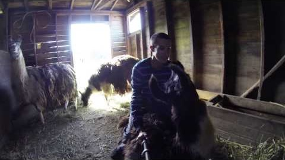

<div class="pictures-wrapper">
    <div class="main-picture-wrapper">
        
    </div>

    <div class="picture-feed-wrapper">
        <div class="picture-repeat" ng-repeat="picture in pictures">
            
            <p class="picture-description">{{picture.description}}</p>
        </div>
    </div>
</div>
